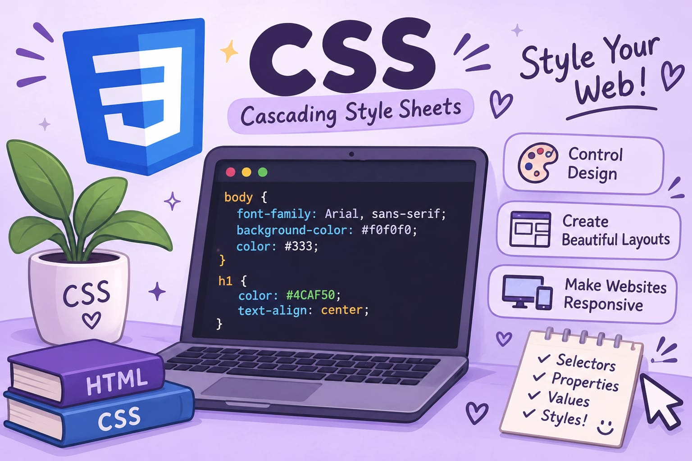

اسم الطالبة: ولاء ورداني كريم علي
الرقم الجامعي: 2503258
المقرر الدراسي: تطبيقات الإنترنت والمنصات الإلكترونية
تعتبر صفحات الويب في صورتها الأولية المعتمدة على لغة HTML مجرد هيكل عظمي جاف يتكون من نصوص وروابط وجداول بسيطة خالية من أي ألوان أو لمسات جمالية. وفي عالم تطوير الصفحات الإلكترونية، لا يكفي تقديم المحتوى النصي فقط للمستخدم، بل يجب أن يكون معروضًا بطريقة بصرية مريحة وجذابة تضمن سهولة الوصول وتزيد من التفاعل.
وهنا يأتي دور لغة CSS (Cascading Style Sheets) أو ما يعرف بأوراق الأنماط المتلاحقة، والتي تعد بمثابة التصميم البصري والروح التي تحول الهيكل البنائي للموقع إلى واجهة متكاملة، جذابة، وتفاعلية تتناسب مع تطلعات وتفضيلات المستخدمين في العصر الرقمي الحديث.
الفكرة الأساسية: تقوم لغة CSS بإنشاء فصل كامل بين محتوى الصفحة المكتوب بلغة HTML وبين الشكل الجمالي والتنسيقي. هذا الفصل يمنح مطوري الويب المرونة المطلوبة لتعديل المظهر دون المساس بالبيانات الأساسية.
قبل إطلاق لغة CSS، كان مطورو الويب يضطرون لتضمين كود التنسيق والألوان داخل ملفات HTML مباشرة، وهذا الأمر كان يؤدي إلى التعقيد وصعوبة الصيانة.
يمكن للمطور كتابة قواعد تنسيقية في ملف CSS خارجي واحد وتطبيقها على كافة صفحات الموقع الإلكتروني بلمسة واحدة، مما يوفر الوقت والجهد بشكل هائل.
عند فصل التنسيقات في ملف مستقل، يقوم المتصفح بتخزين ملف CSS مؤقتًا (Caching)، مما يجعل تنقل المستخدم بين صفحات المنصة أسرع بكثير.
يضمن استخدام ملفات CSS الموحدة إظهار كافة صفحات وبوابات المنصة بنسق بصري متناسق وألوان معتمدة تعكس الهوية المؤسسية أو التجارية للموقع.
لغة CSS هي لغة وصفية وتنسيقية اعتمدت بساطة التركيب البنائي، حيث تعتمد على تحديد العنصر المطلوب وتطبيق الخصائص المرغوبة عليه.
h1 {
color: #1e3a8a;
font-size: 24px;
text-align: center;
}
.button-primary {
background-color: #2563eb;
border-radius: 8px;
padding: 12px 24px;
}
تغطي لغة CSS كافة المحاور البصرية التي تمس تجربة المستخدم بصورة مباشرة، وتتنوع هذه المحاور لتشمل:
تسمح CSS باستخدام ملايين الألوان عبر أنظمة مختلفة مثل RGB و Hex و HSL، كما تمكن المصمم من دمج أكثر من لون لإنشاء خلفيات متدرجة ناعمة تضفي عمقاً بصرياً متميزاً.
الخط هو عنصر التواصل الرئيسي في الويب. تتيح CSS استخدام خطوط احترافية متوازنة، والتحكم التام بمسافات الأسطر وسمك الحروف، وتباعد الكلمات لقراءة مريحة للعين.
تمثل تقنيات Flexbox و CSS Grid ثورة في عالم تصميم الويب، حيث تمكن من تقطير وتوزيع عناصر الصفحة وأعمدتها بسلاسة تامة، مما يلغي التداخلات غير المرغوبة.
مع تنوع الأجهزة المستخدمة في تصفح الإنترنت (هواتف ذكية، أجهزة لوحية، شاشات حاسوب)، أصبح التجاوب شرطاً أساسياً لنجاح أي منصة إلكترونية.
توفر لغة CSS خاصية Media Queries التي تمكن الموقع من إعادة تشكيل وتنسيق عناصره تلقائياً ليتناسب مع حجم الشاشة المفتوحة عليها.

| وجه المقارنة | قبل استخدام CSS | بعد تطبيق CSS |
|---|---|---|
| النصوص والخطوط | خطوط افتراضية بدون ألوان مخصصة. | خطوط جذابة بأحجام متناسقة وتباعد مريح للقراءة. |
| الأزرار والقوائم | رمادية جافة ولا تعطي إيحاء بالضغط. | أزرار جذابة ذات حواف منحنية وتأثيرات تحويم. |
| تنسيق الهيكل | المحتوى يتراكم عمودياً بشكل بدائي. | توزيع شبكي منظم وأعمدة متناسقة وجذابة. |
| ملاءمة الشاشات | ظهور الصفحة بشكل مشوه على الهواتف. | تجاوب كامل وتلقائي مع كافة أحجام الشاشات. |
في الختام، يمكن القول إن لغة CSS لم تعد مجرد أداة لتلوين النصوص أو تغيير الخلفيات، بل أصبحت العمود الفقري لتجربة المستخدم البصرية على شبكة الإنترنت.
إن الفصل بين المحتوى والتصميم باستخدام CSS يمنح المطورين القدرة على بناء منصات إلكترونية احترافية، سريعة، وسهلة الاستخدام والصيانة.
ومع التطور المستمر لتقنيات الويب، تظل CSS مهارة أساسية لا غنى عنها لكل من يسعى إلى التميز في مجال تطوير الواجهات الأمامية.